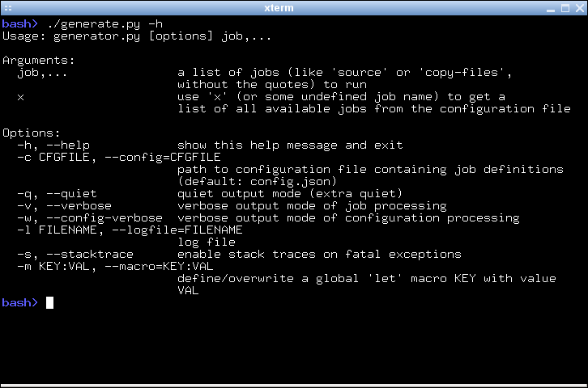
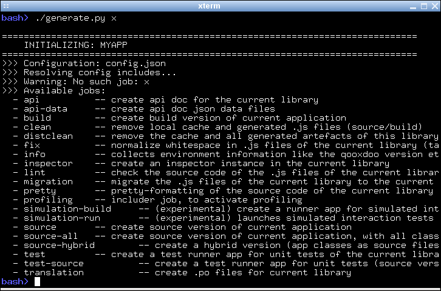
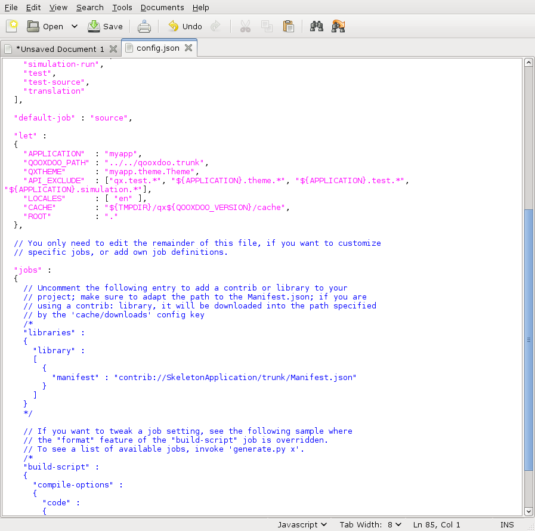

Tutorial: Basic Tool Chain Usage¶
In various introductions and tutorials you were using the qooxdoo tool chain casually along the way. Now it's about time to take a more systematical look. The main interface to invoke the tool chain is the generate.py script that is part of every skeleton, often colloquially referred to as "the generator". In each qooxdoo library or application, it sits next to the library's Manifest.json and the default configuration file, config.json. The Manifest.json file is the main declaration file for any qooxdoo app, it's constitutional document if you will. config.json is the configuration file that steers the generator and its actions. When invoked, the generator looks for a file of this name in the current directory for default instructions, but you can supply an alternative configuration file with a command line option. Invoking
generate.py -h |--help
gives you a complete list of those options.

In the simplest case the generator takes the name of a job to perform as its sole argument. Supplying a non-existing job name will result in the generator providing a list of known jobs which it can perform. You can try this by using a made-up job name like "x":
generate.py x
The ensuing list can be daunting at first, but we will pick out the most important jobs here.

Generating a Runnable App¶
The most important job of the generator is to create a version of your application that you can run in the browser. This is surprising for many people at first. Why do I need to "generate" a working application, when I have written my JavaScript and have an index.html handy? Why not just load the app right away? The answer is that qooxdoo is not a prefabricated JS library that you just <script>-include in your HTML page. For each application exactly those classes are selected that are necessary to run it. This avoids any overhead of carrying unnecessary code with your app. To achieve this, an individual piece of JavaScript code is generated, the so-called loader. For any qooxdoo application, this loader is the first file to be loaded and evaluated in the browser, and it makes sure all necessary component of the application get loaded after it as well. Besides many other benefits that can be achieved, this is the central reason to have a generation step before a qooxdoo app can be run.
Use the Source, Luke¶
The tool chain is able to generate your application in various flavors. This is reflected by the available generation jobs, "source", "hybrid", "source-all" and "build". The most important for starting and building up your app, are the source jobs. Running
generate.py
will generate the so-called "source version" of your application in the default variant.
In general, the source version of an app is tailored towards development activities. It makes it easy to write code, run the application, test, debug and inspect the application code, fix issues, add enhancements, and repeat.
In the source job, all the classes of the app are in their original source form, and loaded from their original file paths on the file system. If you inspect your application in a JavaScript debugger like Firebug or Chrome Developer Tools, you can identify each of your custom files individually, read its code and comments, set breakpoints, inspect variables and so forth. This job is particular interesting when you want to debug classes outside your custom application, e.g. if you are debugging another library along the way.
You only have to re-run this generator job when you introduce new dependencies, e.g. by instantiating a class you haven't used before. This changes the set of necessary classes for your application, and the generator has to re-create the corresponding loader.
In the source-hybrid version, the generator will concatenate class files into a bunch of script files, except for your application classes, which are loaded directly from their original path on the file system. This allows for a reasonable loading speed of your application in the browser, while still providing convenient debug access to your own class files.
With source-all all existing classes will be included, be they part of your application, the qooxdoo framework, or any other qooxdoo library or contribution you might be using. All those classes are included in the build, whether they are currently required or not. This allows you develop your code even more freely as you don't have to re-generate the application when introducing new dependencies. All classes are already there, after all. The down-side is that due to the number of classes your app loads slower in the browser, so it's a trade-off between development speed and loading speed.
So if you are just getting started with qooxdoo development, use the source-all version, which is the most convenient if you are not too impatient. If you are concerned about loading speed during development, but don't mind hitting the up and return keys in your shell window once in a while, go with the default source-hybrid job. If your emphasis on the other hand is on inspection, and you want to see exactly which class files get loaded into your app and which code they provide, the source version might be your preference.
A Deployment Build¶
On the other end of the spectrum there is the build version of you app. The "build" version is what you want to create at the end of a development cycle, when your app is stable and you want to deploy it into production. Running
generate.py build
will create a highly optimized version of your app. All necessary code is stripped, squeezed and compressed, and put into as few JS files as possible. Everything is geared towards small size, fast transport, fast loading and minimal memory footprint. Along with the code, all other required resources, such as icons and images, are collected together under a common root directory, usually named build. The good thing here is that this makes the contents of this directory self-contained so you can copy it to the document tree of a web server, zip it up and send it by mail, and so forth. All necessary content will come along, and the app will just run when the contained index.hmtl is loaded. For an example let's suppose you have an application myapp and a web server instance running on a machine called fooserv. Then, given suitable network connection and setup, the following command will copy your build version to the web server:
scp -r build bar@fooserv:~/public_html/myapp
and you can load it in the browser with
http://fooserv/~bar/myapp/
Non-App-Generating Jobs¶
So now you know about the basic jobs to create a runnable application using the generator. There is a whole bunch of jobs that is not concerned with creating a runnable version of your app, but do other things. One of those is addressed in the Twitter tutorial which is concerned with internationalization of an application. The generator job in this context is translation, and extracts translatable strings from your JavaScript source files into .po files. Here is a quick topical overview of those kinds of jobs:
Internationalization:
- translation -- extract translatable strings into .po files
Source Code:
- lint -- check source code for potential issues
- fix -- fix white space in source code
- pretty -- re-format source code
Development:
- api -- create an application-specific instance of the Apiviewer
- test -- create an application-specific instance of the Testrunner
- inspector -- create an application-specific instance of the Inspector
- simulation-build -- create a GUI testing application (to be used with Selenium)
Files:
- clean -- clean up generated files for this app
- distclean -- clean up generated files for this app, and delete the generator cache
As mentioned before, for a full list of available jobs with short descriptions run generate.py x, or see the the list of default jobs.
Tweaking Jobs¶
For most people the jobs that come with qooxdoo are good enough to get all necessary work done. But not for all. Sometimes you want the output file be named differently; or the index.html that loads your qooxdoo app lives in some other part of your web space; or you want to get rid of a specific optimization in your build version. Fortunately, the tool chain of qooxdoo is very flexible and highly configurable. There is a set of built-in functionality that can be drawn upon by job definitions, and jobs can be freely defined or altered. The system is in fact so configurable that we have thought of means of limiting its flexibility, for the sake of an easier user interface. If you feel you want to change the way in which the generator works, try the following three levels which go from simple (but less powerful) to advanced (but more challenging):
- Macros The first and simplest level to tweak the generator are configuration macros. These are simple strings that can have a value, and that are used in job definitions where they are eventually replaced by their value.
- Overriding Existing Jobs The next level would be to take an existing job (one that comes predefined with qooxdoo), and change some of its settings so it better suits your needs. This is achieved by overriding or "shadowing" an existing job in your own config.json.
- Custom Jobs You can of course define entirely new jobs from scratch. This is the most challenging approach, and requires you to understand a bit about how the generator works internally, and what settings you have to specify in your job definition to make everything work out.
We will look at each of these levels in turn.
Macros¶
Macros are simple named placeholders that are used in generator configuration files. They make it easy to define values that are used in multiple jobs in a single place (e.g. the application name), or expose a value in a specific job so this value can be customized (e.g. a list of packages to ignore when building an application-specific Apiviewer). One way to change a macro is to edit the config.json file of your application. Start your favourite text editor and load the configuration file.

Let's suppose you want to add support for additional locales to your application. Then locate the "let" entry in the configuration map. The let key lets you define macros. Locate the macro named "LOCALES", and add two more locales so the value looks something like this: [ "en", "fr", "de" ]. With the next run of generate.py translation files fr.po and de.po will be added to your source/translation directory.
There is also the possibility to pass a macro definition on the command line when you invoke the generator:
generate.py source --macro CACHE:/tmp/cache
This tells the generator to use the path /tmp/cache for its caching. Passing macros in this manner allows you to change a macro on a per-invocation basis. The command-line value will take precedence over a potential existing definition in config.json.
Overriding Existing Jobs¶
The second approach that goes beyond just modifying a macro is to override an existing job. The default config.json comes with a commented-out sample for this. Let's suppose you want to get rid of the extra newlines that are sprinkled throughout the build version of your app. In the "jobs" section of the config you find a job entry named "build-script". It has a sub-key compile-options/code/format (the "/" indicates nesting in the Json maps) which is set to false (the default is true). Just uncomment this job and run generate.py build again, and you'll find all newlines gone from the generated code. This illustrates the general principle:
- Identify the job you are not contempt with. This might require that you look at the generator output, or consult the basic configuration file, tool/data/config/base.json, as some jobs which you can invoke with the generator are broken down in sub-jobs.
- Add an entry of the same name in your config.json. The generator, once you run it the next time, will indicate this by issuing a hint in the console output that the respective job has been shadowed.
- Add those keys to the job entry that you want to change, with suitable values. Use the default job's definition to find out which config key you need to tweak. To achieve this you can look at the job's definition, e.g. in base.json, or run the generator with the -w command line flag; this will print the full job definition before the job is run.
As mentioned above, on the next time you run the generator it will indicate that you have successfully overridden a predefined job. The message will be something like this:
- Warning: ! Shadowing job "build-script" with local one
(This is also helpful to prevent you from accidentially overriding an existing job with a custom job that is supposed to be new).
Custom Jobs¶
Custom jobs are jobs that you freely define in your config.json. You add them to the "jobs" section just as in the previous step, but making sure you are not using an existing name for them (check the generator console output when you run the job to make sure). The challenge with a custom job is that you have to build it up from scratch, and it might take you through some trial-and-error until you come up with a job definition that is fully functional. To help you with that, many basic configuration entries that almost any job would need are available in dedicated job definitions of their own (like "cache" or "libraries"), and we recommend using them. (This gives you another hint at the configuration system of the tool chain: Jobs need not do anything useful; they can also just be containers for configuration snippets that can be included in other jobs to make their definition more modular or compliant). Here is a simple custom job that just copies two files to the build path of the application:
"myjob" :
{
"extend" : ["cache"],
"copy-files" :
{
"files" : ["foo1.txt", "foo2.txt"],
"source" : "/home/myhome/tmp",
"target" : "./build"
}
}
Don't forget to add the entry "myjob" in your config's "export" list, so it is available on the command line.
Further Resources¶
- If you want to embark on the effort of creating custom jobs you're well-advised to make yourself familiar with the general generator configuration overview, and
- the reference of configuration keys that can be used.
- Also, there is an example configuration file in tool/data/config/example.json to look at.
- The basic configuration file, tool/data/config/base.json,
- and the configuration files for the Testrunner (component/testrunner/testrunner.json)
- and Apiviewer (component/apiviewer/api.json) also provide good examples to learn from.